Estacions de codi: del bloc al mapa
🏷️ Entorn i comunitat🌱 Situació, repte i intenció
La proposta pren com a referència el currículum oficial Learning Station de Matatalab: dotze lliçons, amb una progressió pública que va de la familiarització amb el Coding Set i els blocs (1–4), als obstacles, banderes i laberints amb històries o poemes (5–7), als mapes i les graelles (8–10), i a la creació artística o musical amb accessoris (11–12).
Hem localitzat el PDF docent oficial de 2021, que publica l’índex complet i situa els blocs de lliçons 5–7, 8–10 i 11–12 a partir de les pàgines 30, 41 i 55. La còpia de 29 pàgines que hem pogut extraure acaba abans d’aquests plans; el lector web tampoc ha pogut obrir el PDF complet per la mida del fitxer. Per tant, podem contrastar directament els objectius i l’organització de les lliçons 1–4;
les sessions 5–12 continuen sent adaptacions pròpies basades en l’índex públic i en guies tècniques separades, no una afirmació de correspondència integral amb els plans docents que encara no hem pogut llegir.
La guia docent pública i el curs autoguiat oficial en anglès concreten els quatre primers objectius i activitats: (1) vocabulari de robot, robòtica i comunicació; (2) enviar i rebre missatges i relacionar-ho amb torre i robot; (3) classificar blocs de moviment, nombres, bucles, funcions, música/dansa, obstacles i banderes; i (4) resoldre reptes il·lustrats del Challenge Booklet de nivell 1 amb blocs i bandera, comprovant la posició final.
Les dues guies descriuen una estructura de lliçó amb objectius essencials i d’aprenentatge, estàndards, temps, materials, preparació docent, gestió de l’alumnat, vocabulari i activitats; recomanen grups cooperatius de quatre amb rols com programador/a i inspector/a, i indiquen uns 20 minuts per lliçó. La guia també demana superfície anivellada, robot i torre carregats i materials impresos preparats abans de la sessió. Ací ampliem cada lliçó a 45 minuts per afegir context valencià, prediccions, proves repetides, registre i revisió per una altra parella;
aquesta duració és una decisió local, no l’oficial. El quadern de reptes no està disponible per comprovar cada exercici, així que la sessió 4 usa targetes pròpies i no s’afirma que adapte els seus reptes exactes.
🎯 Aprenentatges i vocabulari
anticipar l’efecte d’una seqüència, distingir ordre i orientació, provar i depurar una ruta, representar espais en una graella, comunicar un itinerari amb vocabulari espacial i revisar una creació a partir de les proves.
🧰 Materials i preparació
- Coding Set complet: MatataBot, torre de control, tauler de programació i blocs tangibles disponibles al kit. Carregueu els dos dispositius i comproveu l’enllaç entre torre i robot abans de la sessió.
- Cinta de pintor, cartolines, targetes de caselles, quadrícula gran creada per l’aula i els obstacles i les banderes físics del Coding Set. Si MatataBot recorrerà físicament un mapa propi, marqueu caselles de 10 × 10 cm: és la mida que Matatalab indica perquè coincidisca amb el moviment del robot. Si alguna peça falta, useu una targeta plana pròpia i anoteu-la com a substitució; no presenteu el paper com si fora una peça del kit.
- Fotografies o dibuixos autoritzats de llocs pròxims: biblioteca, pati, plaça o camí de l’horta. Eviteu incloure cares, adreces particulars o recorreguts identificables d’infants.
- Full de registre amb quatre columnes: predicció, ordres, resultat observat i canvi provat. Prepareu també targetes amb les paraules davant, darrere, gir, casella, inici i destí.
- L’Artist Add-On i el Musician Add-On són opcionals i no es pressuposen en la dotació. Les sessions 11 i 12 ofereixen una via completa amb materials de paper si no hi són.
Organització comuna contrastada amb el curs autoguiat oficial, lliçó 2.7: treballeu en equips de fins a quatre amb rols explícits de programador/a i inspector/a; els rols locals de mapa i portaveu es roten per repartir la participació. Reserveu temps perquè el grup explore i useu preguntes per a orientar-lo sense anticipar-li la solució. La proposta amplia els 20 minuts oficials de cada lliçó a 45 per incloure predicció, prova, registre i retorn entre iguals.
Abans d’iniciar la seqüència, comproveu amb una ordre curta que el robot recorre una casella de 10 cm i anoteu qualsevol desviació del model, la superfície o l’alineació. Manteniu la mida oficial de la quadrícula; si el moviment observat no hi correspon, reviseu la posició inicial, l’estat del robot i la superfície abans de començar. Un mapa de caselles simbòliques amb una altra escala es pot usar per a planificar o simular, però no com a mapa de recorregut físic.
📅 Seqüència didàctica
Quines peces fan possible el viatge
Objectius d’aprenentatge: Identificar les parts reals del Coding Set, explicar com circula una ordre de la torre al MatataBot i representar el vocabulari inicial amb un dibuix.
Vocabulari clau: robot, robòtica, programació, ordre, torre, enviar, rebre.
Temps orientatiu local: fases 1–5: 7 + 10 + 10 + 12 + 6 minuts (45 min). La guia oficial de Learning Station indica 20 minuts per lliçó; aquest repartiment amplia el temps per a proves, registre i retorn entre parelles.
Fase 1 · Activem i prediem
Presenteu el repte de preparar una ruta perquè una altra classe puga descobrir la biblioteca o un racó del pati. Feu una breu introducció guiada al vocabulari programació, robot, robòtica, enviar i rebre; mostreu el kit tancat i recolliu prediccions sobre què pot fer cada peça. La guia oficial reserva uns 20 minuts a aquesta lliçó; aquesta versió l’amplia dins de la sessió local de 45 minuts.
Fase 2 · Explorem i construïm
En equips de quatre, identifiqueu robot, torre i tauler. Repartiu i roteu els rols de programador/a, inspector/a, responsable del mapa i portaveu; observeu quines peces necessiten càrrega i quines ordres tangibles reconeix el kit. Cada membre dibuixa o escriu un símbol propi per a una paraula del vocabulari i l’explica al grup abans de provar res.
Fase 3 · Expliquem i registrem
Executeu una ordre senzilla des d’una casella marcada i observeu què passa quan la torre llig el tauler i envia la instrucció al robot. Repetiu només després de tornar a col·locar el robot en la mateixa posició inicial.
Fase 4 · Apliquem i millorem
Dibuixeu el recorregut i completeu la frase «La torre… / el robot…». Distingiu la lectura del programa del moviment físic, i compartiu els dibuixos de vocabulari amb un altre equip.
Fase 5 · Comprovem i reflexionem
Enviar i rebre una instrucció
Objectius d’aprenentatge: Representar el procés d’enviament i recepció d’un missatge, distingir emissor i receptor, i comunicar una ordre sense perdre’n el sentit.
Vocabulari clau: missatge, emissor, receptor, torre, robot, instrucció.
Temps orientatiu local: fases 1–5: 7 + 10 + 10 + 12 + 6 minuts (45 min). La guia oficial de Learning Station indica 20 minuts per lliçó; aquest repartiment amplia el temps per a proves, registre i retorn entre parelles.
Fase 1 · Activem i prediem
Acordeu almenys tres missatges curts i neutres sobre espais del centre (per exemple, «la biblioteca està oberta» o «el pati està tancat»). No useu informació personal. La guia oficial proposa grups de fins a quatre i missatges senzills preparats abans d’anar a un espai ampli.
Fase 2 · Explorem i construïm
En equips de quatre, situeu dues persones a cada costat d’un espai ampli: una parella envia els tres missatges oralment i l’altra els rep i els anota; després canvieu els rols. Compareu què passa quan un missatge arriba incomplet o en un ordre diferent.
Fase 3 · Expliquem i registrem
Representeu una ruta amb blocs en el tauler. La torre llig la disposició i envia instruccions al robot; una parella fa de programadora i l’altra d’inspectora: abans d’executar, la receptora descriu què espera que faça el robot. Repetiu amb una sola ordre canviada i identifiqueu el missatge diferent.
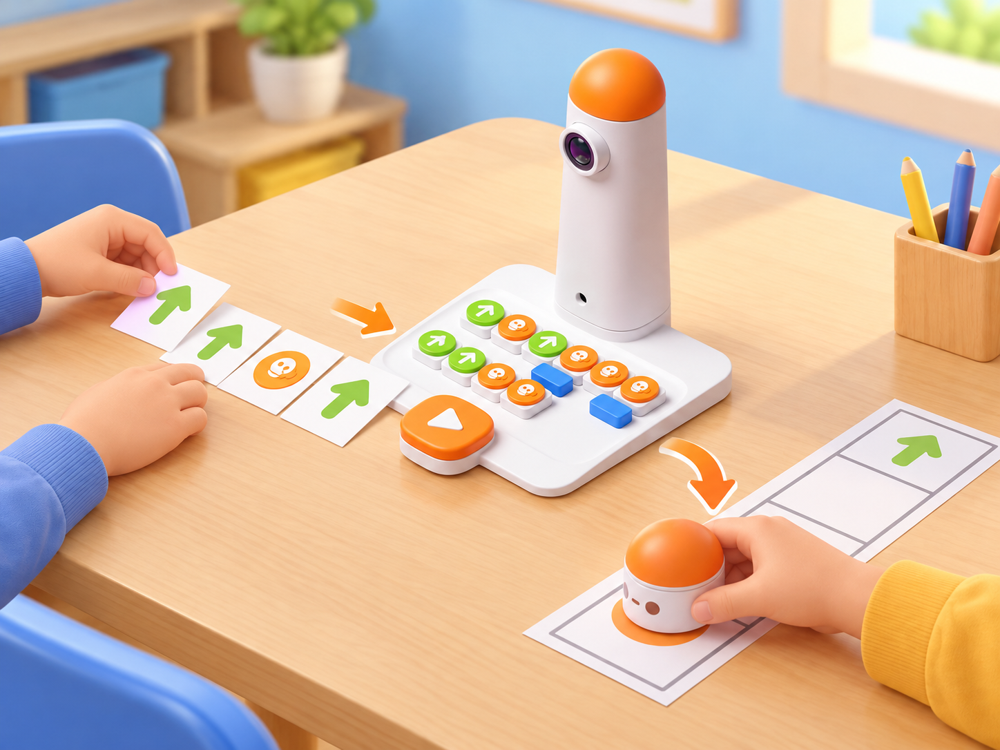
Fase 4 · Apliquem i millorem
Dibuixeu dos símbols propis, un per a «enviar» i un per a «rebre», i expliqueu la relació entre torre, programa i robot.
Fase 5 · Comprovem i reflexionem
Classificar blocs, obstacles i destinacions
Objectius d’aprenentatge: Classificar les peces presents segons la funció observada, reconéixer els elements opcionals i justificar la classificació amb una prova o una font.
Vocabulari clau: moviment, nombre, bucle, funció, obstacle, bandera, accessori.
Temps orientatiu local: fases 1–5: 7 + 10 + 10 + 12 + 6 minuts (45 min). La guia oficial de Learning Station indica 20 minuts per lliçó; aquest repartiment amplia el temps per a proves, registre i retorn entre parelles.
Fase 1 · Activem i prediem
Mostreu el Coding Set preparat sobre una taula plana. Abans de tocar les peces, cada equip proposa criteris per a agrupar-les.
Fase 2 · Explorem i construïm
Repartiu targetes pròpies amb aquestes categories: moviment/direcció, nombres/paràmetres, repetició, funcions, música/dansa i obstacles/banderes. En grups de quatre, classifiqueu les peces que realment hi ha al kit i poseu cada targeta al costat del grup corresponent. Si una categoria depén d’un accessori absent, deixeu la targeta com a «no disponible en aquesta dotació»; no la completeu amb peces imaginàries.
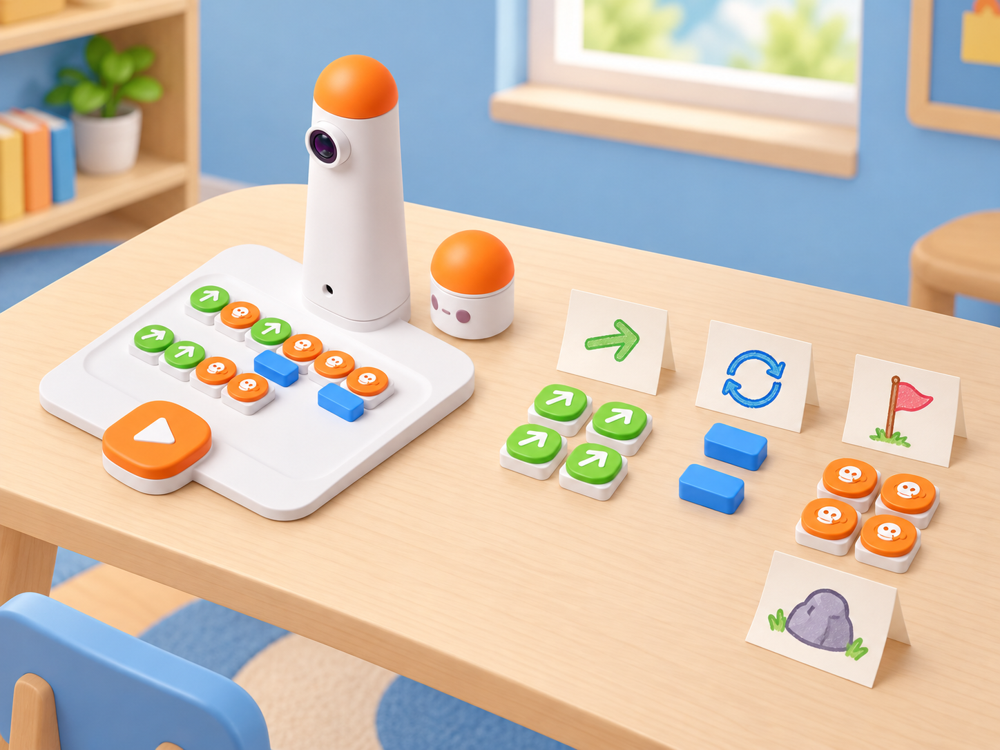
Fase 3 · Expliquem i registrem
Expliqueu per a què podria servir cada categoria i feu un dibuix original que la represente. Compareu dues classificacions i justifiqueu qualsevol diferència amb una peça concreta, una instrucció del manual o una prova observada.
Fase 4 · Apliquem i millorem
Reuniu les targetes i prepareu un inventari de classe: nom, funció comprovada i dependència d’accessori si n’hi ha.
Fase 5 · Comprovem i reflexionem
Resoldre reptes de codi amb banderes
Objectius d’aprenentatge: Llegir una ruta il·lustrada, construir una seqüència de blocs, predir el destí i depurar una instrucció a partir de la posició observada.
Vocabulari clau: predicció, seqüència, orientació, destí, bandera, depuració.
Temps orientatiu local: fases 1–5: 7 + 10 + 10 + 12 + 6 minuts (45 min). La guia oficial de Learning Station indica 20 minuts per lliçó; aquest repartiment amplia el temps per a proves, registre i retorn entre parelles.
Fase 1 · Activem i prediem
La guia oficial proposa completar els reptes il·lustrats del Challenge Booklet de nivell 1: seguir la imatge, col·locar blocs i una bandera de destinació, prémer el botó gran i comprovar la posició final del robot. No disposem d’una còpia llegible del quadern per a contrastar-ne cada exercici. Si el centre conserva el quadern, seleccioneu-ne tres reptes i adapteu-ne el context sense alterar les instruccions; si no, useu les targetes originals següents.
En cap cas es presenten aquestes targetes pròpies com els reptes exactes del quadern.
Dibuixeu una graella de quatre per quatre amb caselles de 10 × 10 cm si es farà una prova física, i amb destinacions fictícies inspirades en espais pròxims —biblioteca, hort escolar i plaça—. Prepareu tres targetes pròpies amb inici, bandera i seqüència representada amb símbols. Si les targetes són esquemàtiques i no estan a escala, identifiqueu-les com a planificació o simulació. Abans de col·locar blocs, cada equip traça la ruta amb el dit i anota on espera que acabe el robot.
Fase 2 · Explorem i construïm
En grups de quatre, repartiu els rols de programador/a, inspector/a, responsable del mapa i portaveu; canvieu-los després del primer repte. Resoleu tres reptes: primer, el repte il·lustrat triat del quadern oficial, si és disponible, o una targeta pròpia per arribar amb una seqüència curta; després, una targeta amb gir i orientació inicial marcada; finalment, compareu dues seqüències vàlides per a la mateixa destinació. La persona inspectora comprova que la seqüència física coincideix amb la imatge abans de prémer el botó gran d’execució.
Després, compareu la posició final del robot amb el destí dibuixat i corregiu una sola peça si no coincideixen.
Fase 3 · Expliquem i registrem
Cada equip dibuixa una ruta original amb blocs i bandera per a un altre equip. Qui la rep la programa sense que l’equip autor li done instruccions orals. Registreu la predicció, les ordres col·locades, el destí observat i la primera diferència entre el mapa i l’execució; si la ruta no funciona, identifiqueu la primera instrucció que cal revisar abans de canviar-la.
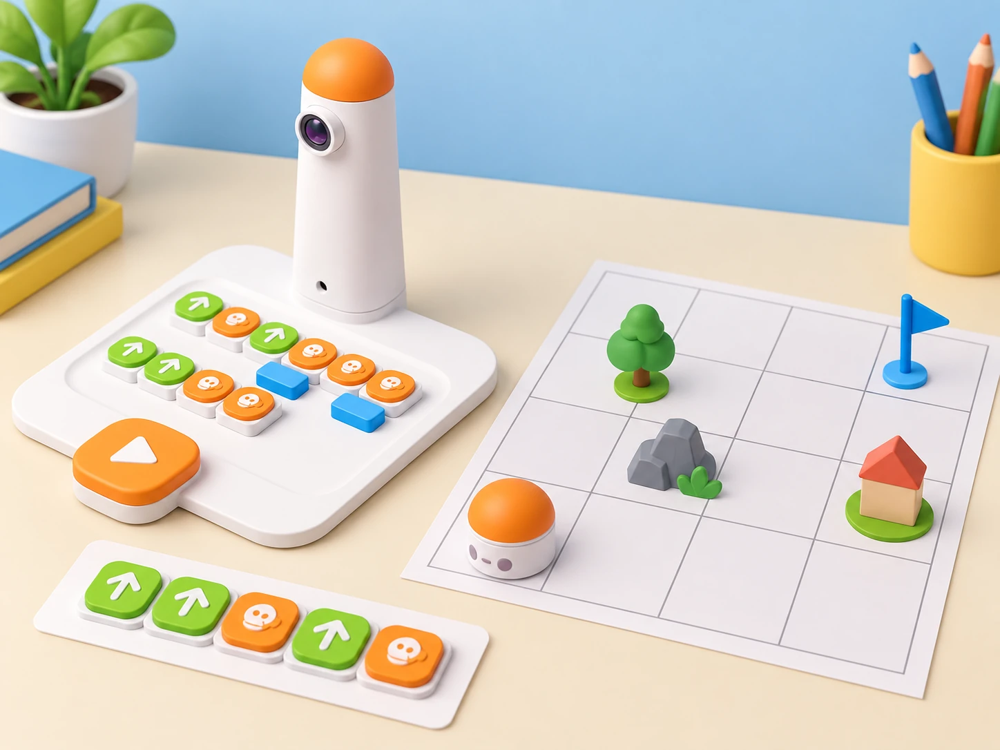
Fase 4 · Apliquem i millorem
Afegiu una restricció nova —un obstacle fora del camí, una altra bandera o un inici amb orientació diferent— i feu que una parella visite el repte. La parella autora explica la regla del mapa, però no dicta les ordres. Després, discutiu què ha sigut clar, creeu una versió revisada i compartiu-la amb un altre equip. Com a connexió amb el món real, trieu un recorregut quotidià segur entre dos espais del centre i representeu-ne només les relacions bàsiques;
no inclogueu ubicacions privades ni afirmacions d’accessibilitat sense comprovar-les.
Fase 5 · Comprovem i reflexionem
Tanqueu la sessió amb una autoavaluació: «la meua predicció…», «la prova ha mostrat…» i «he revisat…». Cada equip comparteix una solució, una dificultat i la modificació que ha fet el repte més comprensible per a una altra parella.
Descobrir què fa que un mapa siga un laberint
Objectius d’aprenentatge: Distingir un camí d’un laberint, localitzar inici, cruïlles i carrerons sense eixida, i verificar en una representació corporal que hi ha un camí viable.
Vocabulari clau: laberint, camí, cruïlla, carreró sense eixida, inici, eixida.
Temps orientatiu local: fases 1–5: 7 + 10 + 10 + 12 + 6 minuts (45 min). La guia oficial de Learning Station indica 20 minuts per lliçó; aquest repartiment amplia el temps per a proves, registre i retorn entre parelles.
Fase 1 · Activem i prediem
Presenteu un camí obert i un laberint dibuixat amb carrers de paper. Demaneu que localitzen inici, destinació, cruïlles i carrerons sense eixida.
Fase 2 · Explorem i construïm
En grups de quatre, una persona fa de robot sobre una quadrícula de cinta i les altres li donen instruccions d’una en una. Marqueu en el mapa on hi ha més d’una opció i on cal tornar arrere; no poseu obstacles físics al recorregut.
Fase 3 · Expliquem i registrem
Cada equip dibuixa un primer laberint senzill de carrers amples amb més d’un itinerari possible. Una fitxa recorre la ruta i el grup comprova que almenys una opció connecta entrada i eixida.
Fase 4 · Apliquem i millorem
Intercanvieu mapes i demaneu a una altra parella que trace un camí possible sense que l’equip autor li’l marque.
Fase 5 · Comprovem i reflexionem
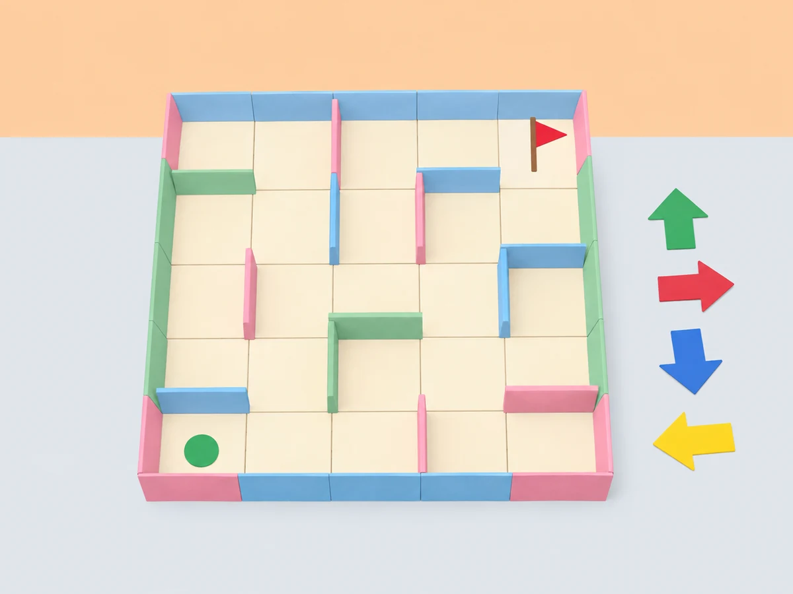
Afegir obstacles i banderes
Objectius d’aprenentatge: Diferenciar obstacles i destinacions, planificar un recorregut que evite les peces i comprovar que el robot segueix les ordres sense atribuir-li detecció automàtica.
Vocabulari clau: obstacle, bandera, destinació, ruta, prova, límit del robot.
Temps orientatiu local: fases 1–5: 7 + 10 + 10 + 12 + 6 minuts (45 min). La guia oficial de Learning Station indica 20 minuts per lliçó; aquest repartiment amplia el temps per a proves, registre i retorn entre parelles.
Fase 1 · Activem i prediem
Recupereu el laberint de la sessió anterior i distingiu un obstacle, una bandera de destí i un carrer transitable. La bandera indica on arribar; no és un bloc de moviment.
Fase 2 · Explorem i construïm
Cada equip observa i classifica les peces d’obstacle i les banderes reals del set. Col·loqueu una peça d’obstacle en una casella i la bandera en una altra com a destí; si el grup no té alguna peça, substituïu-la per una targeta plana i registreu la diferència. Comproveu que la quadrícula deixa espai perquè el robot puga girar i que cap peça queda enganxada a les rodes.
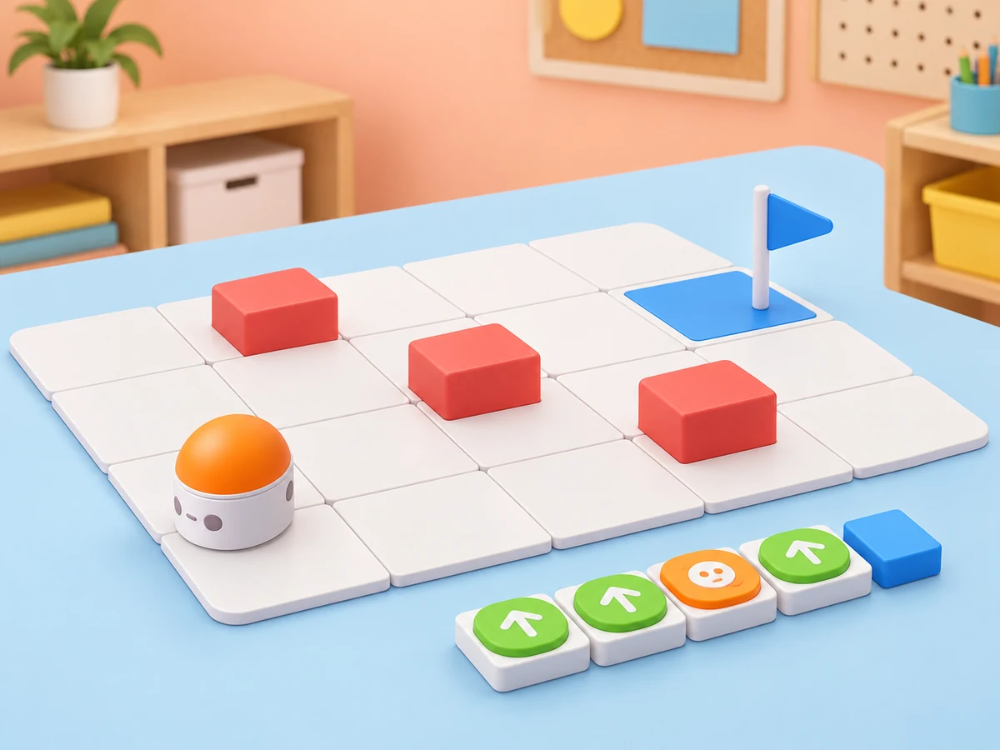
Fase 3 · Expliquem i registrem
Situeu el robot en un inici marcat, poseu una bandera en la casella de destí i col·loqueu fins a tres obstacles del kit fora de les caselles de pas. Dibuixeu un camí que els evite, convertiu-lo en instruccions i proveu-lo a velocitat normal i en una superfície plana. El Coding Set no detecta els obstacles automàticament: l’equip ha de planificar la ruta i observar si el programa la respecta. Registreu el primer punt on el camí previst i l’execució divergeixen;
canvieu una ordre cada vegada.
Fase 4 · Apliquem i millorem
Canvieu la bandera de casella sense moure els obstacles i expliqueu què ha canviat en la ruta necessària. Abans de la segona execució, una altra parella valida que el camí no travessa cap peça i que la bandera és visible des de l’inici.
Fase 5 · Comprovem i reflexionem
Crear un laberint amb inici i final
Objectius d’aprenentatge: Dissenyar i explicar un laberint amb almenys una ruta viable, programar-la, contrastar el resultat entre equips i crear un relat o poema breu en què les parades i els moviments del MatataBot formen part de la història.
Vocabulari clau: llegenda, ruta viable, programa, revisió, Albufera, destinació.
Temps orientatiu local: fases 1–5: 7 + 10 + 10 + 12 + 6 minuts (45 min). La guia oficial de Learning Station indica 20 minuts per lliçó; aquest repartiment amplia el temps per a proves, registre i retorn entre parelles.
Fase 1 · Activem i prediem
Cada equip tria un espai valencià imaginari —una marjal, un jardí escolar o un camí entre parades del mercat— i fixa una entrada i una bandera final. Acordeu una llegenda que diferencie camí, peça d’obstacle i destí sense dependre només del color. Presenteu també el repte narratiu: cada parada important del recorregut haurà de fer avançar una història o un poema del lloc.
Fase 2 · Explorem i construïm
Dissenyeu un laberint propi amb carrers amples i dos o tres obstacles reals del set; afegiu una bandera de destí i comproveu amb una fitxa que hi ha almenys una ruta completa. Si no disposeu de les peces, les targetes planes són l’alternativa. Una altra parella revisa que inici, obstacle, bandera i llegenda siguen inequívocs abans de programar. Trieu tres parades i escriviu una frase o un vers breu per a cadascuna; les frases han de poder-se llegir en l’ordre del recorregut.
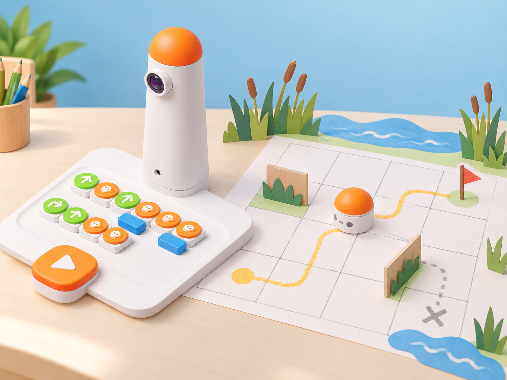
Fase 3 · Expliquem i registrem
Col·loqueu la seqüència de blocs i executeu-la des del mateix inici. Compareu la posició final amb la bandera i comproveu que el robot no ha xocat amb cap obstacle. Si el programa no arriba, canvieu una sola instrucció i repetiu la prova. Després, creeu una segona solució si el laberint permet més d’un camí; el robot no identifica quin camí és segur, ho decideix qui programa.
Vinculeu cada vers o frase a una casella o parada perquè el text es puga narrar mentre una persona executa la ruta.
Fase 4 · Apliquem i millorem
Intercanvieu laberints i relats. L’equip visitant interpreta la llegenda, reconstrueix la ruta, prova el programa i narra el text en les parades acordades; l’equip autor registra una millora del mapa, de les instruccions o de l’ordre narratiu. Aquesta combinació de laberint, moviment i creació de relats/poemes adapta el propòsit general publicat per a les lliçons 5–7; les tres parades i el format breu són decisions pròpies d’aquesta proposta.
Fase 5 · Comprovem i reflexionem
Crear un mapa esquemàtic de l’entorn (45 min)
Objectius d’aprenentatge: Representar relacions espacials amb símbols i llegenda, separar observacions de decisions de disseny i comunicar un itinerari sense afirmar distàncies reals.
Vocabulari clau: mapa, símbol, llegenda, lloc, camí, representació esquemàtica.
Temps orientatiu local: fases 1–5: 7 + 10 + 10 + 12 + 6 minuts (45 min). La guia oficial de Learning Station indica 20 minuts per lliçó; aquest repartiment amplia el temps per a proves, registre i retorn entre parelles.
Fase 1 · Activem i prediem
Aquesta sessió adapta el tema oficial «Introducing Maps»: representar un espai amb símbols i llegenda abans de convertir-lo en una quadrícula. El mapa és una maqueta didàctica, no un plànol d’orientació real.
Compareu un dibuix panoràmic i una llista de llocs del centre o d’un poble imaginari. Quina informació cal perquè una altra classe entenga com es relacionen els llocs? Useu espais públics o inventats, mai adreces particulars.
Fase 2 · Explorem i construïm
Observeu una imatge o un dibuix de referència de l’Albufera i identifiqueu elements que es poden representar sense afirmar distàncies exactes: aigua, camins, horta, pont, plaça o biblioteca. Separeu allò observat d’allò que el grup proposa com a símbol.
Fase 3 · Expliquem i registrem
Acordeu una llegenda amb símbols diferenciats per a lloc, camí, inici i destinació. Anoteu què significa cada símbol i quina informació deixa fora el mapa; encara no afegiu coordenades ni una escala geogràfica.
Fase 4 · Apliquem i millorem
Dibuixeu un mapa esquemàtic amb quatre o cinc llocs i un camí continu. Una altra parella l’interpreta sense ajuda i marca amb una fitxa una ruta possible. Si no pot distingir camins, llocs i destí, reviseu la llegenda o l’organització abans d’afegir instruccions per al robot.
Fase 5 · Comprovem i reflexionem
Expliqueu una decisió de representació i una limitació del mapa. Deseu la versió inicial i el retorn de la parella perquè es puga transformar en graella en la sessió següent.
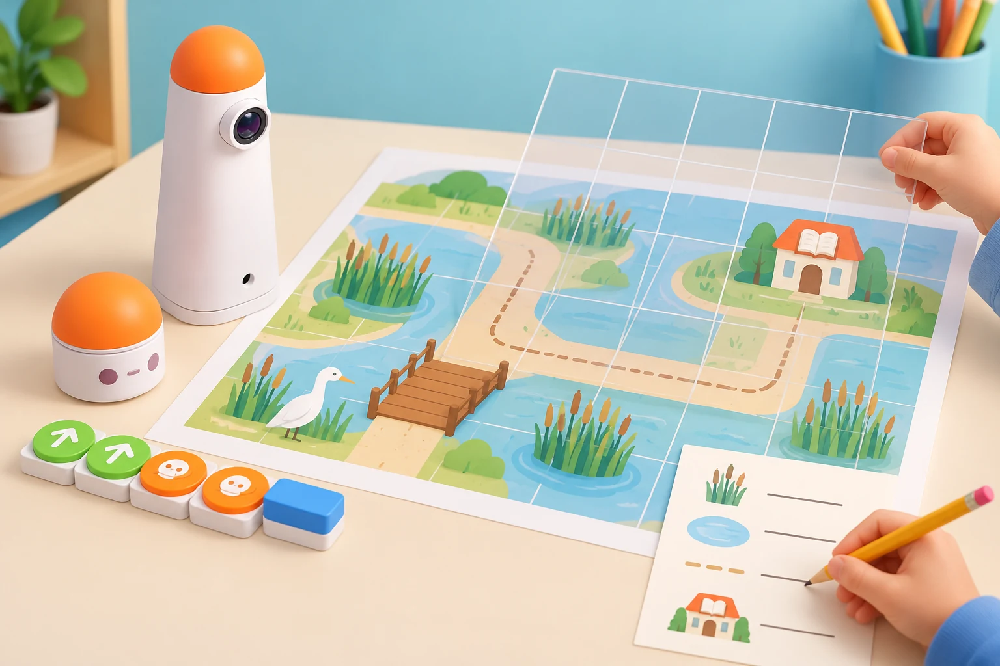
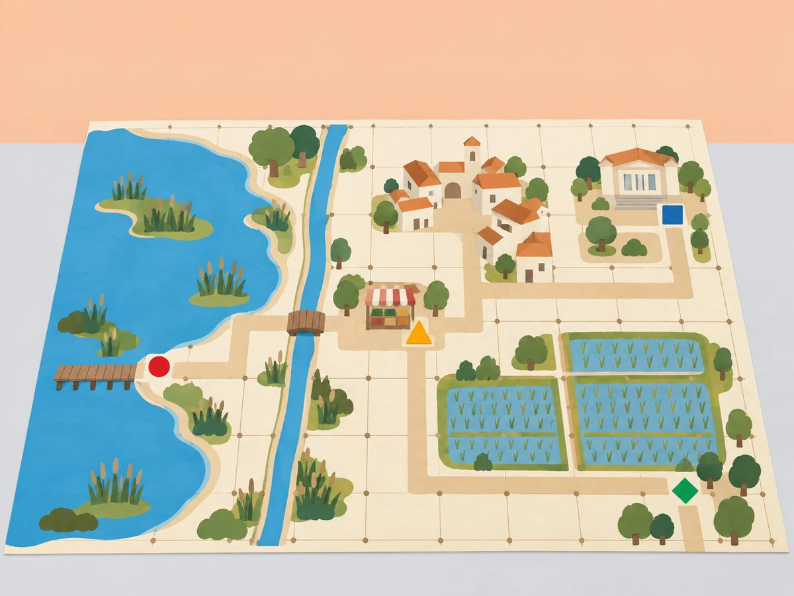
Convertir el mapa en una graella (45 min)
Objectius d’aprenentatge: Convertir un mapa propi en caselles, identificar posicions amb una referència acordada i traduir una ruta a ordres tenint en compte l’orientació del robot.
Vocabulari clau: graella, fila, columna, coordenada, orientació, casella, simulació.
Temps orientatiu local: fases 1–5: 7 + 10 + 10 + 12 + 6 minuts (45 min). La guia oficial de Learning Station indica 20 minuts per lliçó; aquest repartiment amplia el temps per a proves, registre i retorn entre parelles.
Fase 1 · Activem i prediem
La segona lliçó del bloc oficial tracta les graelles. Ací transformem el mapa de la sessió 8 en una representació regular que permet descriure posicions i instruccions sense confondre coordenades amb ordres directes del Coding Set.
Recupereu el mapa esquemàtic i trieu un recorregut curt. Predigueu què es perdrà i què es guanyarà si es dibuixa sobre caselles iguals.
Fase 2 · Explorem i construïm
Poseu una quadrícula transparent o de paper damunt del mapa. Marqueu files i columnes amb símbols grans, una fletxa d’orientació i les posicions d’inici/destí. Si es farà una prova física, useu caselles de 10 × 10 cm i manteniu el recorregut lliure perquè el robot puga girar; una quadrícula amb una altra escala és només representació o simulació.
Fase 3 · Expliquem i registrem
Descriviu tres llocs amb referències de fila/columna i practiqueu una ruta amb davant, darrere i gir. Acordeu el punt de vista del robot; una coordenada assenyala una casella, però no indica cap a on mira ni substitueix els blocs de moviment.
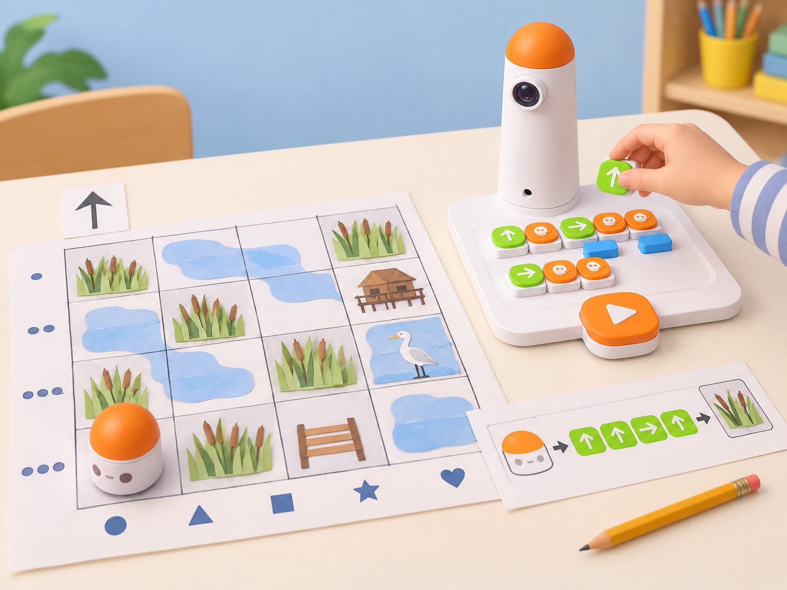
Fase 4 · Apliquem i millorem
Una parella dona la ruta amb referències de graella i l’altra la tradueix a blocs físics. Predigueu les caselles de pas, executeu des d’una mateixa orientació inicial i anoteu la primera diferència entre posició prevista i observada. Corregiu una sola instrucció i proveu de nou.
Fase 5 · Comprovem i reflexionem
Compareu mapa i graella: quins detalls del lloc han quedat simplificats? Quina informació cal afegir perquè un equip visitant puga reconstruir la ruta?
Reduir una ruta amb bucles i funcions (45 min)
Objectius d’aprenentatge: Comparar una seqüència explícita amb una representació amb bucle o funció, provar l’equivalència i valorar la llegibilitat per a una altra parella.
Vocabulari clau: seqüència, repetició, bucle, definició, crida, funció, equivalència.
Temps orientatiu local: fases 1–5: 7 + 10 + 10 + 12 + 6 minuts (45 min). La guia oficial de Learning Station indica 20 minuts per lliçó; aquest repartiment amplia el temps per a proves, registre i retorn entre parelles.
Fase 1 · Activem i prediem
Aquesta sessió adapta «Introducing More Advanced Coding Blocks». Els recursos oficials de Matatalab descriuen l’ús de bucles amb moviment i nombre, i de funcions amb altres blocs o bucles; fem servir eixes regles publicades, però no afirmem que siguen els passos exactes del pla docent de la lliçó 10. Abans de començar, comproveu que els blocs de bucle i funció del kit local estiguen complets i siguen reconeguts pel tauler.
Mostreu dues seqüències pròpies per arribar a la mateixa destinació: una llarga i una amb un tram repetit. L’alumnat prediu quina és més fàcil de revisar i identifica quina part es repetix.
Fase 2 · Explorem i construïm
Amb els blocs disponibles, observeu que un bucle es forma amb inici i final en parella; el nombre va davall del bloc d’inici i controla quantes vegades es repetixen les ordres interiors. Per a les funcions, consulteu el manual de la versió local: la guia de Matatalab indica que definició i crida s’usen en parella, que la definició se situa en la fila inferior a la crida i que no s’hi combina un bloc numèric.
No improviseu una disposició si les peces del centre difereixen.
Fase 3 · Expliquem i registrem
Representeu el mateix tram repetit com una seqüència explícita i com un bucle, anotant quines ordres queden dins del parell. Després, identifiqueu un recorregut que puga encapsular-se en una funció i dibuixeu on apareix la definició i on es crida. Si falta algun bloc, feu aquesta comparació amb targetes pròpies i marqueu-la com a simulació.
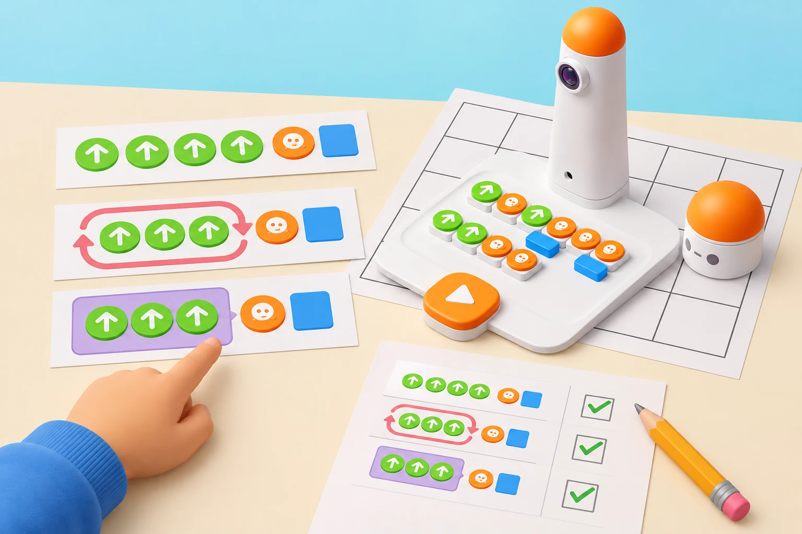
Fase 4 · Apliquem i millorem
Programeu la ruta de la graella de la sessió 9 amb el mètode més llegible per al kit real. Proveu primer la versió sense comprimir; després, useu un bucle o una funció, una a la vegada, i compareu si el robot arriba a les mateixes caselles. Registreu ordres, errors i diferències; una ruta més curta no es considera millor si deixa de ser interpretable per l’equip visitant.
Fase 5 · Comprovem i reflexionem
Cada equip justifica quina representació reutilitzaria i per què. Separeu la funció realment executada pel robot de la que només s’ha representat en paper.
Angles i estrelles del nostre entorn (45 min)
Objectius d’aprenentatge: Distingir angle interior i gir del robot, descompondre una roseta o estrella en trams repetits i provar el traçat només amb l’accessori compatible disponible.
Vocabulari clau: angle interior, gir, vèrtex, patró, estrella, Artist Add-On.
Temps orientatiu local: fases 1–5: 7 + 10 + 10 + 12 + 6 minuts (45 min). La guia oficial de Learning Station indica 20 minuts per lliçó; aquest repartiment amplia el temps per a proves, registre i retorn entre parelles.
Fase 1 · Activem i prediem
L’índex de Learning Station inclou angles i pentagrames/estrelles en el tram de creació amb Artist i Musician Add-Ons. La guia oficial complementària Artist concreta l’objectiu de combinar blocs d’angle i moviment, l’inventari de 20 blocs (deu valors, dos de cada), tres llapis de colors i tres targetes d’escalfament amb sis mostres. També especifica que MatataBot traça l’angle suplementari del bloc i que aquest només es combina amb gir esquerra/dreta; moviment i bucle completen el traçat.
La fitxa adapta la progressió amb una mostra d’escalfament si hi ha el complement i, després, una roseta pròpia inspirada en rajoles i places valencianes, sense copiar les mostres ni pressupostar accessoris.
Mostreu una roseta dibuixada per l’equip docent i pregunteu quines repeticions i girs poden explicar-ne la forma. Cada parella marca amb fletxes el recorregut que espera i indica què entén per angle; no confongueu l’angle de gir del robot amb l’angle interior del polígon.
Fase 2 · Explorem i construïm
Amb paper, regle i transportador opcional, compareu un gir recte amb girs més oberts o més tancats. Dibuixeu un pentagrama (estrela de cinc puntes) amb els vèrtexs marcats i traceu l’ordre que seguix el llapis. Si el centre disposa de l’Artist Add-On compatible, inventarieu-ne els 20 blocs d’angle, els tres llapis de colors i les tres targetes d’escalfament (sis mostres) que realment hi ha.
Trieu-ne una mostra de triangle o quadrat per comprovar el muntatge i la relació entre ordre i traçat abans de crear una forma pròpia; reviseu les instruccions abans de muntar el llapis. La guia del fabricant enumera deu valors d’angle (30°, 36°, 45°, 60°, 72°, 108°, 120°, 135°, 144° i 150°), cadascun amb dos blocs; useu només els valors presents i feu una plantilla original de prova.
La fitxa de Learning Station no és accessible completa, així que aquesta mostra es pren de la guia tècnica oficial Artist i no es presenta com el pas exacte del pla de la lliçó 11.
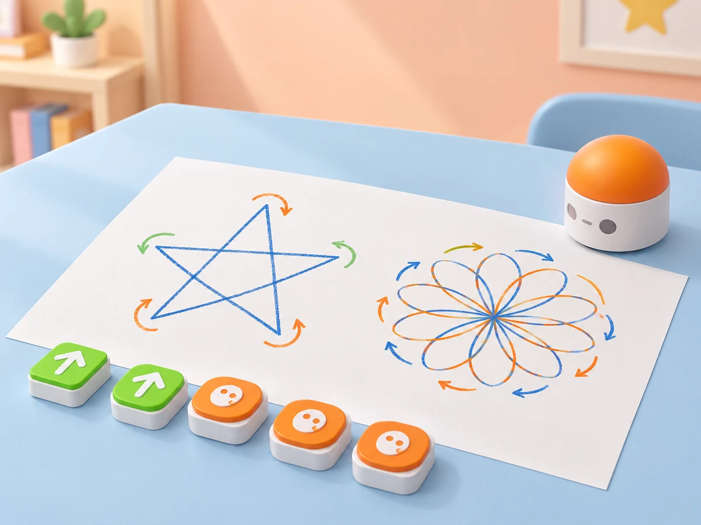
Fase 3 · Expliquem i registrem
Descomponeu la roseta en trams repetits. En una taula, anoteu nombre de trams, gir observat, predicció i resultat. Feu una primera simulació amb fletxes sobre una quadrícula; una seqüència de girs a la graella no es presenta com una ordre en graus si el kit base no permet introduir-la.
Fase 4 · Apliquem i millorem
Amb el complement verificat, combineu blocs de moviment, gir, angle i bucle per provar un triangle i una estrella propis. Predigueu la relació entre angle interior i gir suplementari, canvieu un paràmetre cada vegada i comproveu el traç sobre paper. Sense complement, manteniu el mateix objectiu amb una composició de paper: programeu MatataBot perquè visite els vèrtexs numerats d’una estrella gran o representeu el traçat amb una fitxa; registreu aquesta alternativa com a simulació, no com a dibuix del robot.
Una parella revisa si el patró es pot repetir i si el dibuix coincideix amb la ruta prevista.
Fase 5 · Comprovem i reflexionem
Cada equip mostra el patró i completa «Hem pogut comprovar… / Encara no podem afirmar…». Compareu el dibuix, la seqüència i el moviment observat; guardeu la plantilla pròpia i anoteu si s’ha usat el complement o una alternativa.
Joc creatiu lliure: una obra que una altra classe puga explorar (45 min)
Objectius d’aprenentatge: Crear una proposta original per a una altra classe, integrar allò que el kit disponible permet, rebre retorn i aplicar una millora comprovable.
Vocabulari clau: creació, destinatari, prototip, retorn, millora, funció comprovada.
Temps orientatiu local: fases 1–5: 7 + 10 + 10 + 12 + 6 minuts (45 min). La guia oficial de Learning Station indica 20 minuts per lliçó; aquest repartiment amplia el temps per a proves, registre i retorn entre parelles.
Fase 1 · Activem i prediem
La guia oficial tanca el currículum amb «Introducing Creative Free Play». Ací l’alumnat tria una idea i combina lliurement les habilitats treballades en una creació per a una altra classe. Com a connexió tècnica complementària, la guia Musician explica com combinar blocs de nota i melodia amb nombres per modificar el compàs; només s’aplica si el complement està present i verificat. Si no, el repte continua amb seqüències de paper, símbols i una alternativa silenciosa.
Obriu tres possibilitats sense imposar-ne cap: una història en un mapa, un laberint amb més d’una ruta o una composició de patrons/estrelles. Cada equip tria destinatari, propòsit i una cosa que vol provar; la proposta ha de poder-se explicar amb les peces que realment té. Si el centre disposa del Musician Add-On compatible, introduïu l’objectiu de crear música amb blocs de nota o de melodia; el producte és una composició pròpia, no la reproducció d’una cançó publicada.
Fase 2 · Explorem i construïm
Feu un esbós amb inici, fites i final o amb les parts del patró. Assigneu rols rotatius i prepareu una llegenda. Si s’incorpora el Musician Add-On, comproveu que hi ha els 16 blocs de notes de clau d’ut i els 16 de clau de sol, els 10 blocs de melodia predefinida i les targetes d’escalfament; el Coding Set continua sent necessari. Si el centre no disposa del complement, oferiu l’alternativa en paper i silenciosa sense penalització.
Fase 3 · Expliquem i registrem
Convertiu el disseny en una seqüència llegible: ordre de blocs, repeticions que el kit base admeta, girs, obstacles representats i missatge final. Si hi ha Musician, distingiu la nota (tria de to) de la melodia predefinida; per a les notes, barregeu els blocs de Do a Ti per seleccionar l’escala i comproveu l’ordre amb una targeta de pràctica. La guia oficial indica que cada bloc de música té un valor rítmic predeterminat d’1/4; combinat amb el bloc numèric 2, passa a 2/4.
Ací «1/4» i «2/4» indiquen el valor que descriu la guia, no un compàs complet. Registreu el patró curt de notes i ritmes com a creació original i contrasteu què canvia en variar només el nombre. En una fitxa pròpia, distingiu «funció comprovada», «simulació» i «idea per provar». Abans d’executar, una parella predix què farà el robot o com recorrerà el visitant l’obra.
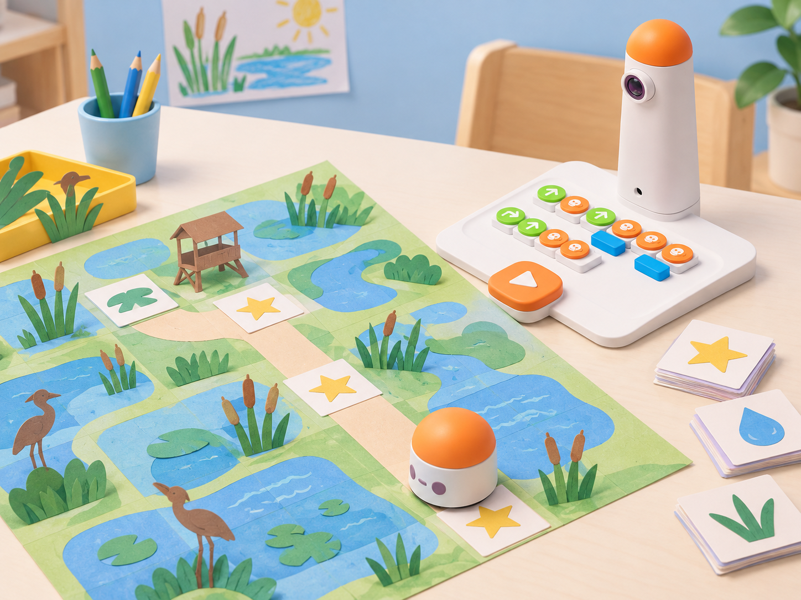
Fase 4 · Apliquem i millorem
Feu una prova amb MatataBot si el disseny usa rutes; manteniu el mateix inici i compareu predicció/resultat. Si és una composició sonora i hi ha Musician Add-On, proveu primer un patró curt amb un bloc de música (valor rítmic 1/4); repetiu-lo amb el bloc numèric 2 (valor 2/4) i compareu la duració percebuda. Després, compareu-lo amb un bloc de melodia predefinida i expliqueu què podeu modificar i què ja ve fixat. No copieu una cançó publicada.
Si no hi ha complement, representeu el patró amb paper, ritme silenciós i símbols. Una classe visitant prova o interpreta la proposta sense indicacions de l’equip autor; el grup registra un comentari i aplica una millora concreta.
Fase 5 · Comprovem i reflexionem
Presenteu el producte i expliqueu una decisió basada en la prova, una limitació del model i quina part depenia d’un accessori. Deseu el mapa o plantilla, la seqüència i el retorn rebut per a la mostra de classe.
🧪 Evidències i avaluació
Recolliu evidències al llarg de la seqüència, no sols el producte final:
- Representació: prediccions, llegendes, orientació i mapes amb inici i destí identificables.
- Programació: seqüències tangibles que una altra parella puga llegir i provar.
- Revisió** registre de la primera divergència observada i del canvi aïllat que s’ha comprovat.
- Comunicació: poema, relat o instruccions espacials amb símbols explicats.
- Col·laboració: rotació dels rols de planificació, programació i observació; cada infant ha de tindre una manera accessible de participar.
- Reflexió: diferència entre l’espai real i la maqueta, entre ordre prevista i moviment observat, i entre kit base i accessoris opcionals.
Useu una escala de tres nivells —encara necessita suport, ho resol amb una bastida, ho explica i ho transferix— amb descriptors concrets. No avalueu la rapidesa, la qualitat del dibuix ni la capacitat de parlar en públic com a substituts del pensament computacional.
♿ Participació, accessibilitat i seguretat
Assigneu rols rotatius sense reservar sempre els blocs a la mateixa persona. Oferiu instruccions amb fletxes grans, contrast suficient, caselles tàctils o una explicació oral alternativa. Un equip pot planificar en paper mentre espera el kit i validar la seua ruta quan li toque el torn.
Manteniu el robot sobre una superfície plana, deixeu lliure el seu recorregut i poseu les peces d’obstacle només en caselles que el programa no travesse. Abans d’executar, una persona adulta comprova que les peces estan estables i no freguen les rodes; si falta alguna peça, la targeta plana és una substitució. No alceu ni forceu la torre o el robot mentre estan connectats. Si apareix un error de comunicació o de lectura, l’adult revisa bateria, alineació i peces abans d’atribuir-lo a l’alumnat.
🔗 Referents i adaptació
- Matatalab, Learning Station Curriculum: font pública que descriu 12 lliçons, el Coding Set com a producte principal i la progressió general entre blocs, obstacles/laberints, mapes/graelles i creacions amb Artist/Musician Add-Ons.
- Matatalab, Teacher Resource Guide · Learning Station Curriculum (PDF complet publicat): guia docent oficial de 2021. L’índex públic situa les lliçons 5–7, 8–10 i 11–12 a les pàgines 30, 41 i 55. La còpia de 29 pàgines disponible per a lectura acaba abans; el lector web no ha pogut extraure el PDF complet (11 MB). S’han contrastat directament els objectius i les activitats de les lliçons 1–4 a les pàgines 19–23; les 5–12 continuen sense verificació pas a pas.
- Matatalab, Matatalab Edu Teacher’s Resource Guide (2020): guia institucional alternativa de 24 pàgines. Descriu el Learning Station a nivell de currículum i unitats, però no inclou els plans docents detallats de les lliçons 5–12.
- Matatalab, guia oficial del Coding Set: enumera els obstacles i les banderes entre els elements del kit base i descriu les categories de blocs. La proposta usa estes peces per a planificar les rutes; no atribueix a MatataBot detecció automàtica d’obstacles.
- Matatalab, Loop, Function, Artist i Musician: guies oficials complementàries que verifiquen les combinacions de blocs, les restriccions de disposició de bucles/funcions, els valors d’angle, les tres targetes d’escalfament (sis mostres) i les funcions de notes/melodies. Musician especifica 16 blocs per a cadascuna de les dues claus, 10 melodies, selecció de notes Do–Ti i el valor rítmic d’1/4 que passa a 2/4 amb el bloc numèric 2; per això no es descriu com un compàs. No es presenten com el pla docent complet de les lliçons 10–12 de Learning Station.
- MatataStudio, curs oficial autoguiat, lliçons 2.3–2.6: explica la parella inici/final i el nombre del bucle, la col·locació de definició i crida de funció, l’ús dels blocs d’angle amb moviment i els complements Artist i Musician. S’ha utilitzat per contrastar les instruccions tècniques de les sessions 10–12; és una guia de producte per al professorat i no substitueix els plans de classe complets de Learning Station.
- MatataStudio, curs oficial autoguiat, lliçó 2.7 «Learning Station Curriculum»: confirma que són 12 lliçons de 20 minuts i que la guia docent recomana grups de quatre, rols de programador/a i inspector/a, temps suficient d’exploració i preguntes de suport. És una orientació metodològica comuna, no el desenvolupament de les tasques particulars de les lliçons 5–12.
- MatataStudio, llista oficial de descàrregues: el 13 d’octubre de 2026 mostra «MatataStudio Learning Station TG-sample.pdf», de 70,09 MB i 108 pàgines, actualitzat el 2 de desembre de 2025. L’enllaç de descàrrega es resol dinàmicament i no s’ha pogut recuperar en aquesta consulta; el contingut de la mostra nova queda pendent de comparació.
- Matatalab, catàleg d’activitats Coding Set: font complementària per comprovar el producte i les activitats públiques; no substituïx el pla docent complet.
La seqüència local conserva la progressió temàtica pública i crea context, materials de paper, consignes, registres i avaluació originals. Per a les sessions 11–12, la pàgina oficial i l’índex del PDF enumeren angles, pentagrames o estrelles i creació lliure; la proposta els converteix en una roseta de l’entorn i una obra oberta, sense afirmar una correspondència exacta de cada subtema amb una lliçó perquè no s’ha pogut inspeccionar el PDF complet. Les dues sessions separen l’ús real d’un accessori de l’alternativa desconnectada.
Continua pendent el contrast integral de les lliçons 5–12 i dels exercicis individuals del quadern, ja que la descàrrega oficial excedeix el límit de lectura disponible.